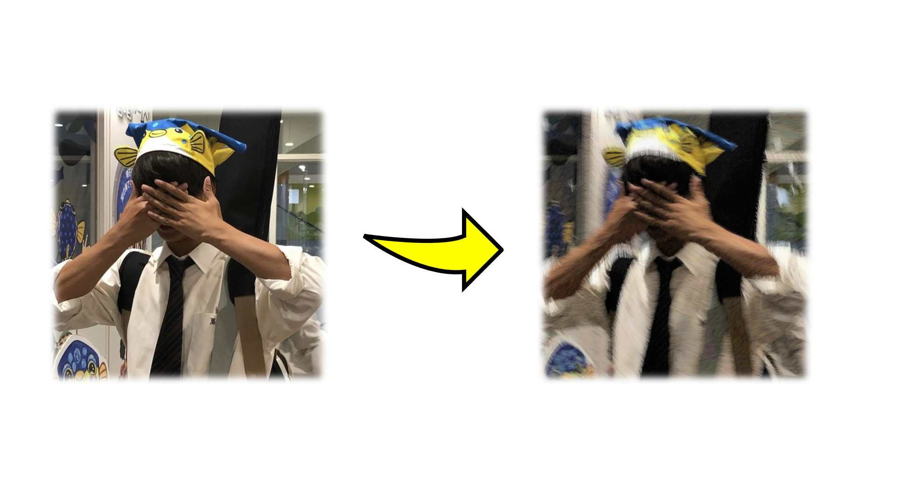
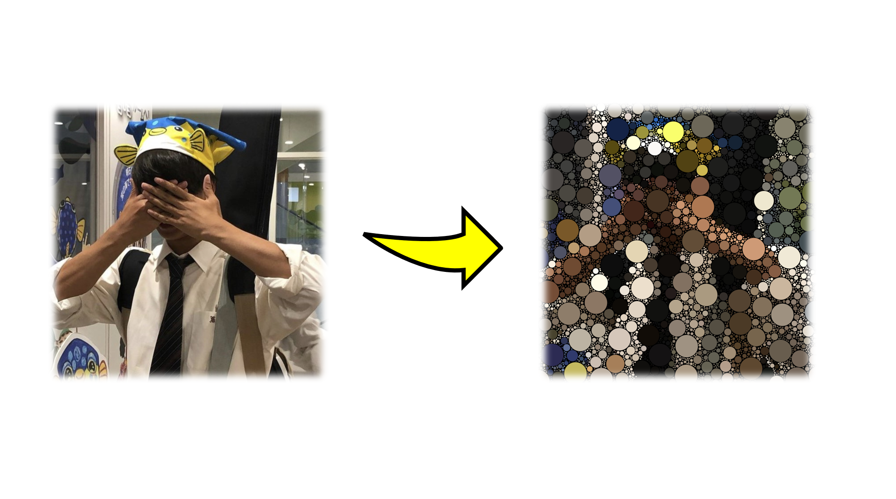

画像を挿入すると、ランダムな線や丸で画像をモザイクのように生成していくコードを作成しました。
線で作る絵画風モザイク
次のように画像を挿入することによって、ランダムな場所にランダムな長さの線を描くことで絵画風のモザイク写真を作成できます。

また、その過程を次に表示します。
ランダムな円で描くモザイク
次のように画像を挿入することによって、ランダムな場所にランダムな大きさの円を描くことでモザイク写真を作成できます。

また、その過程を次に表示します。
コーディングについて
コードと同じファイルの中に写真のデータを入れてもらい、コードの中の画像ファイルの名前を変えていただけると、どのような写真でも上記のモザイク写真を作成することができます。
MosaicLine /
MosaicCIrcleからダウンロードしてぜひ確認してください。
※それぞれのコードは別々のファイルに入れて実行するようにしてください。